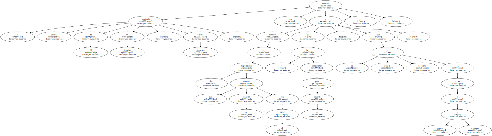
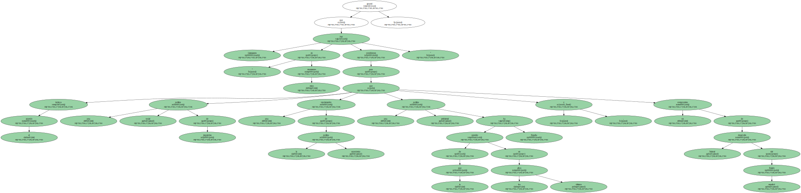
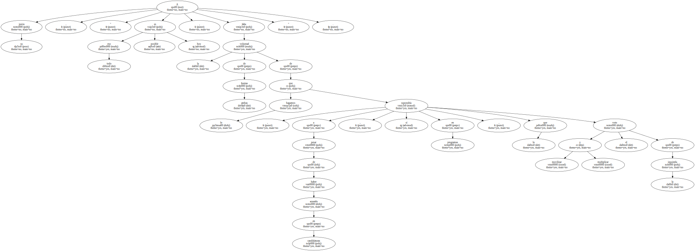
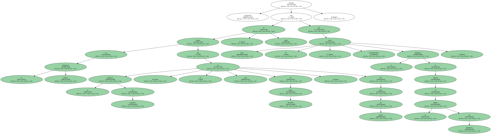
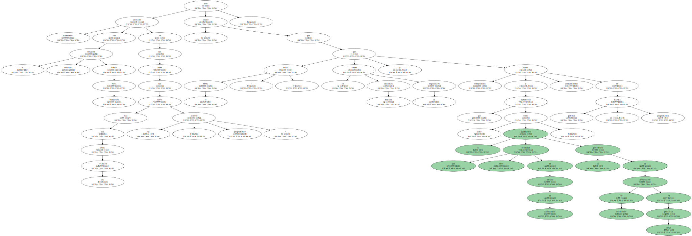
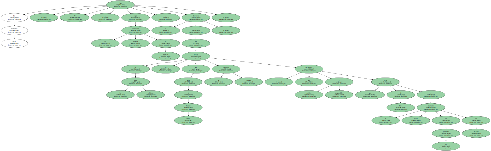
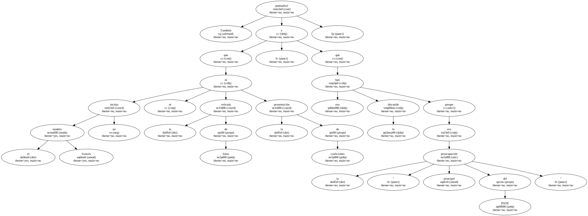
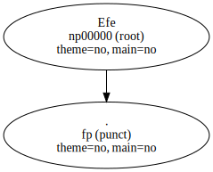

El coordinador general de IU de Asturias , Gaspar Llamazares , comentó hoy al referirse a las negociaciones que su coalición mantiene con el PSOE , que hay " condiciones para el acuerdo , que es posible y necesario en torno a políticas y programas ".
Llamazares apuntó que en " estos momentos hay condiciones para que el acuerdo incluya una política social de izquierdas , una reorientación de la política económica , una política ambiental de la que ha carecido España en los últimos años y un compromiso de desarrollo federal del Estado español ".
A su juicio , " todo eso es posible hoy , falta la voluntad de ambas fuerzas de que , a pesar de haber acuerdo en candidaturas , sí lo hagamos en programas , lo que supondría movilizar y multiplicar el voto de la izquierda ".
Llamazares comentó que en su formación política sabían que la propuesta de coalición " no era vista de forma favorable " por parte del PSOE , al igual que ellos no veían " favorablemente su propuesta de retirada de un número de provincias ".
Explicó que IU no consideraba " coherente la propuesta de retirada de sus candidaturas , porque va en detrimento de una de las fuerzas de la izquierda al no permitir mantener su identidad en todo el Estado ".

Llamazares coincidió con el dirigente socialista Alfredo Pérez Rubalcaba en que para que exista una coalición tiene que haber un " acuerdo programático " , pero apuntó que el PSOE " olvida que ya estaba bastante adelantada la negociación y había compromisos y acercamientos en materia política y programática que sustentaban tanto la posibilidad que ellos defendían de retirada de candidaturas , como la posibilidad de presentación de coaliciones en varias provincias ".
En estos momentos , IU , según su coordinador general en Asturias , sigue " dispuesta a que en los próximos días se firme por parte de ambas fuerzas un programa común , un documento político y programático que sirva de base a un Gobierno plural de la izquierda en España ".
También puntualizó que el modelo francés no incluía ni la retirada de listas ni la presentación de coaliciones , y que eso lo han discutido porque era la " principal preocupación del PSOE ".
A juicio de Llamazares , su coalición antepone que tanto PSOE como IU respondan a la " ilusión , demanda y expectativa social que se ha creado en la izquierda con la posibilidad de este acuerdo ".

Efe.
